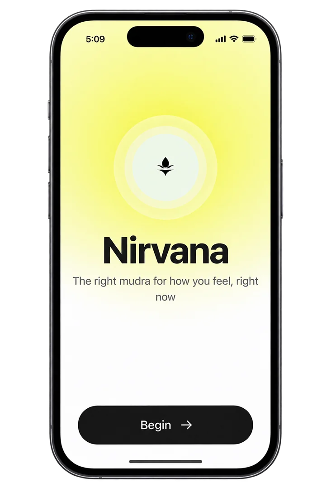
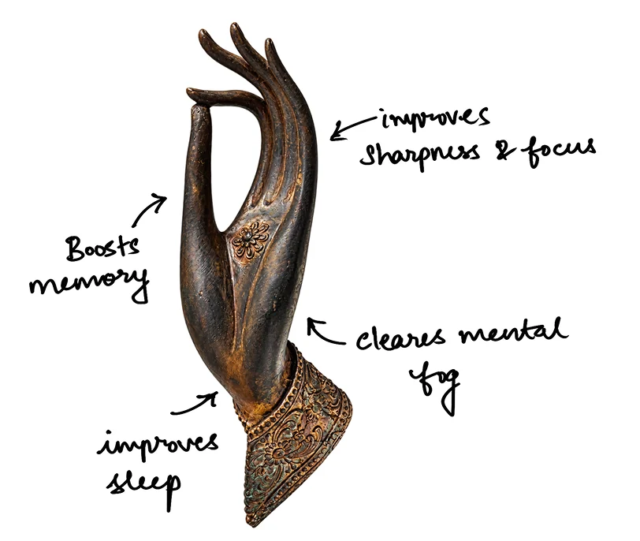
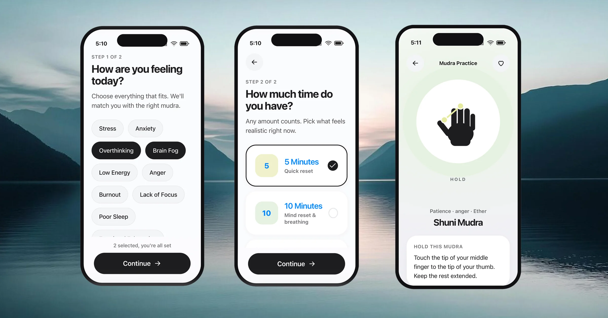
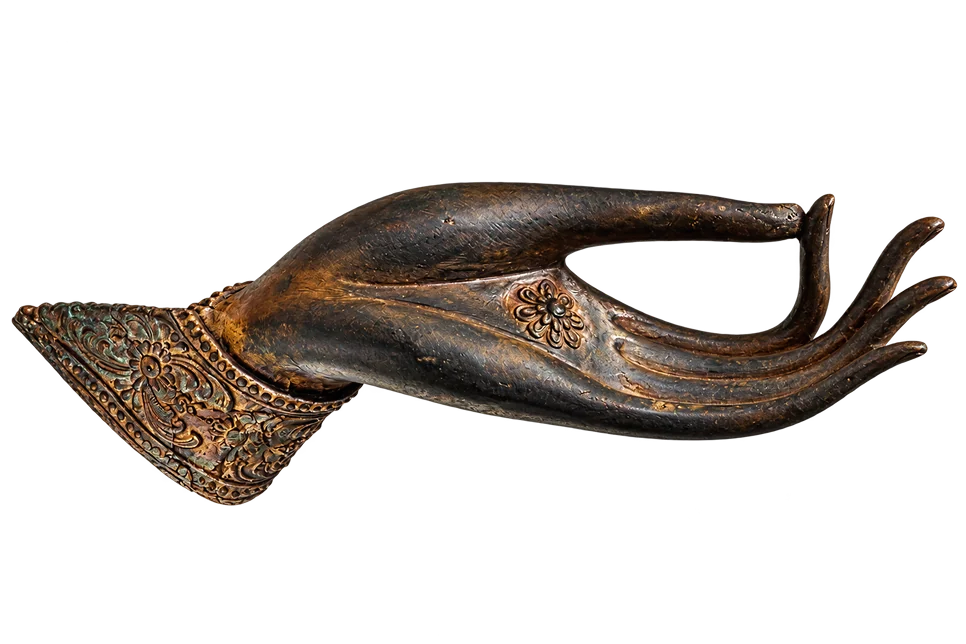
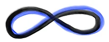

nirvana 2.0
meditation that adapts
to how you feel
Part 1 got people coming back. Then they opened the app, met a library, and left. This replaces browsing with matching: two taps, a feeling and a duration, and the app decides. One recommendation, with its reasoning stated in plain language, instead of five minutes of self-diagnosis.
the problem
The drop-off happens on the screen before the session.
Someone opening the app anxious at 11pm is asked to browse categories, compare durations and read descriptions. That is cognitive work, and it competes directly with the state they are trying to leave.
Choice is presented as generosity. For a stressed user, a large library is friction.
the library model
- The user must self-diagnose, then translate that into a search
- Every option looks equally valid, so none feels correct
- Decision cost is highest exactly when the user can least pay it
- Success depends on already knowing what you need
solution
- Two taps, a feeling and a duration, and the system decides
- One recommendation, with its reasoning stated in plain language
- Time of day is inferred, never asked
- The app carries the expertise so the user doesn't have to
small enough to explain
A feeling maps to a mudra. Time of day acts as a corrective layer. If the clock says it's late and the mapped mudra is an energising one, the system swaps it for a wind-down gesture, and tells the user why. Nothing sits behind a black box, so every recommendation carries its own justification.

The recommendation engine
![Three inputs, feeling, time of day and available time, enter a set of five matching rules: feeling to mudra, use the default if none, late-hour override, duration or inferred, state the reason. A late-hour override swaps energising for wind-down. They resolve to one recommendation: Gyan Mudra, the gesture of knowledge, chosen because the user is stressed this morning, for five minutes, tagged focus and clarity. Written underneath: five rules is the whole model. What a user cannot follow, a user cannot trust.](../assets/img/nirvana2/nv2-engine.webp)

design decisions taken
ask for a feeling
Onboarding collects plain-language states, overthinking, burnout, poor sleep, because that is the vocabulary users already have. Translating that into a practice is the product's job, not the user's. A category list would have been easier to build and would have moved the work back onto the person least able to do it.
builtshowing the reasoning
Every recommendation carries a sentence naming the inputs that produced it. Stated reasoning is what turns an algorithmic guess into something a user will follow, and it constrains the model, because a rule you can't explain in one line doesn't get to exist.
builtthe hand gestures (mudras)
Schematic vector hands render at any size, need no localisation, and highlight only the contact points that matter. Ten of them cover the emotional range onboarding asks about. Video was the assumed default and would have cost a production pipeline, a re-shoot for every addition, and a comprehension problem across cultures that Part 1 had already measured.
builtIt is real, and it works. Tap through it.
Or open it full size in a new tab
logic is real and testable
Part 1 proved reinforcement brings people back. Part 2 removes the obstacle that met them when they arrived. Together they make a single argument. Retention is a design problem at both ends of the session, not just at the notification.
NOT YET MEASURED. The prototype is functional and the logic is testable, but this has not run with a user cohort. The next honest step is a two-week diary study comparing matched entry against library entry. That is the study that would either confirm this or kill it.
Take a break


Why don't you take a short break, hold your hand by joining the index finger with your thumb. Do it for both hands, close your eyes and take 5 to 12 deep breaths. You are doing great!